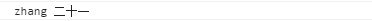
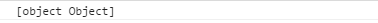

url传参的优缺点？还可以通过什么传递？
小课堂【北京】
分享人：韩筠宜
目录
1.背景介绍
2.知识剖析
3.常见问题
4.解决方案
5.编码实战
6.扩展思考
7.参考文献
8.更多讨论
1.背景介绍
页面传参的必要性
Web页面通过URL地址传递参数常见问题及检测方法Web页面即我们在浏览器中所看到的网页，在Web应用程序中，其页面往往需要进行动态切换和数据交互，页面间的数据常规传递方法有多种.
2.知识剖析
- URL传参的格式
- URL传参的优缺点
- 其它传参方法
1.URL传参的格式
- 写法：http://xxx.com/login.jsp?name=zhang&type=admin
- url和参数之间用"?"隔开
- 多个参数之间用"&"符号连接
2.URL传参的优缺点
- 优点：
- URL地址法简洁易用，可同时传递多个字符型参数；
- URL地址法可以很方便的在页面之间切换并传递参数，无需额外的处理，基于正常情况比较不会性能损失；
- 缺点：
- URL传递参数长度受限，最大为2K；
- URL只能传递字符型参数，传递中文时，由于发送页面和接收页面的字符编码方式不一样而导致参数解析处理错误，参数包含中文时可能出现乱码或者参数接收错误；
- 信息泄露：URL地址在客户端可见，导致会泄露信息，可能被黑客用来攻击系统。
其它传参方法
其他传参方法，包括localStorage,sessionStorage,cook,基于angular的一些方法，在代码实战中详细讲解。
3.常见问题
如何传递对象
4.解决方案
下面的编码实战中详解
5.编码实战
var go = document.getElementById('go');
//跳转带参数
function tt() {
location.href='page2.html?name=zhang'
}
//获取参数
function get() {
var name= location.search;
console.log(name)
location.href='page2.html?name=张三&type=2'

使用localStorage传参，（Session是一个套路，有限期不一样）
var go = document.getElementById('go');
//跳转带参数
function tt() {
location.href='page2.html';
localStorage.name='zhang';
localStorage.age='二十一'
}
//获取参数
function get() {
location.href='page1.html';
var name= localStorage.name;
var age = localStorage.age;
console.log(name,age)
}

如果我们传一个对象
var go = document.getElementById('go');
//跳转带参数
function tt() {
var people={
name:'张三',
age:8
}
location.href='page2.html';
localStorage.people=people;
}
//获取参数
function get() {
location.href='page1.html';
var people= localStorage.people;
console.log(people)
}

先处理后再传递
var go = document.getElementById('go');
//跳转带参数
function tt() {
var people={
name:'张三',
age:8
}
location.href='page2.html';
localStorage.people= JSON.stringify(people);
}
//获取参数
function get() {
location.href='page1.html';
var people= JSON.parse(localStorage.people);
console.log(people)
}
使用cook传参，涉及到了cook的设置有效期，删除，修改，编码
///设置cookie
function setCookie(NameOfCookie, value, expiredays)
{
//@参数:三个变量用来设置新的cookie:
//cookie的名称,存储的Cookie值,
// 以及Cookie过期的时间.
// 这几行是把天数转换为合法的日期
var ExpireDate = new Date ();
ExpireDate.setTime(ExpireDate.getTime() + (expiredays * 24 * 3600 * 1000));
// 下面这行是用来存储cookie的,只需简单的为"document.cookie"赋值即可.
// 注意日期通过toGMTstring()函数被转换成了GMT时间。
document.cookie = NameOfCookie + "=" + escape(value) +
((expiredays == null) ? "" : "; expires=" + ExpireDate.toGMTString());
}
///获取cookie值
function getCookie(NameOfCookie)
{
// 首先我们检查下cookie是否存在.
// 如果不存在则document.cookie的长度为0
if (document.cookie.length > 0)
{
// 接着我们检查下cookie的名字是否存在于document.cookie
// 因为不止一个cookie值存储,所以即使document.cookie的长度不为0也不能保证我们想要的名字的cookie存在
//所以我们需要这一步看看是否有我们想要的cookie
//如果begin的变量值得到的是-1那么说明不存在
begin = document.cookie.indexOf(NameOfCookie+"=");
if (begin != -1)
{
// 说明存在我们的cookie.
begin += NameOfCookie.length+1;//cookie值的初始位置
end = document.cookie.indexOf(";", begin);//结束位置
if (end == -1) end = document.cookie.length;//没有;则end为字符串结束位置
return unescape(document.cookie.substring(begin, end)); }
}
return null;
// cookie不存在返回null
}
///删除cookie
function delCookie (NameOfCookie)
{
// 该函数检查下cookie是否设置，如果设置了则将过期时间调到过去的时间;
//剩下就交给操作系统适当时间清理cookie啦
if (getCookie(NameOfCookie)) {
document.cookie = NameOfCookie + "=" +
"; expires=Thu, 01-Jan-70 00:00:01 GMT";
}
}
setCookie(NameOfCookie, value, expiredays)//新增；（修改，直接覆盖即可）
getCookie(NameOfCookie)//获取cookie
delCookie (NameOfCookie)//删除，原理为设置cookie的有效期为过去的时间
基于angular的传参
//路由设置
.state('producers', {
url: '/producers',
templateUrl: 'views/producers.html',
controller: 'ProducersCtrl'
})
.state('producer', {
url: '/producer/:producerId',
templateUrl: 'views/producer.html',
controller: 'ProducerCtrl'
})
//传参
.controller('ProducersCtrl', function ($scope, $state) {
$scope.toProducer = function (producerId) {
$state.go('producer', {producerId: producerId});
};
});
//接收参数
.controller('ProducerCtrl', function ($scope, $state, $stateParams) {
var producerId = $stateParams.producerId;
});
利用服务来传参
var app = angular.module('myApp', []);
app.factory('instance', function(){
return {};
});
app.controller('MainCtrl', function($scope, instance) {
$scope.change = function() {
instance.name = $scope.test;//设置instance.name的值
};
});
app.controller('sideCtrl', function($scope, instance) {
$scope.add = function() {
$scope.name = instance.name;//获取MainCtrl中$scope.test的值
};
});
6.扩展思考
cook的详细参数
7.参考文献
参考一：cookie
参考二：知乎-传参
8.更多讨论
讨论点一
你常用什么方式传参
鸣谢
感谢大家观看
BY : 彭勇 | 韩筠宜